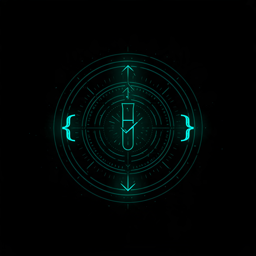

Merge gate
Merge Gate (Automated & Binary)
- Trigger
- PR commit or pull request event
- Scope
- Delta-only test execution (change-impacted flows)
- Target SLA
- Fast feedback (< 5 minutes)
- Criteria
- 100% deterministic green; blocks merge automatically on red
QA Engineering · Test Orchestration · Panel Presentation
A plan for founding the QA function — and the tooling I'd bring with me. Most of it already exists. This site is part of the demo: it tests itself in CI on every push.
What I know about you
StrongMind runs a courseware platform serving 6–12 digital curriculum to schools and districts, analytics that teachers act on, a family-facing homeschool product, and Course Builder — AI-generated curriculum on an agentic architecture. Different products, different failure costs. Quality effort should follow the cost.
| Surface | Worst escaped defect | Why it ranks here |
|---|---|---|
| Grades & progress data | A student sees a wrong grade; a district report is wrong | Trust and compliance — the defect you can't apologize your way out of |
| Assessment submission | A quiz submits but doesn't save | One lost submission = one family's trust, at scale |
| Enrollment & rostering | A student can't reach their course | Blocks learning on day one; support load spikes |
| AI-generated content (Course Builder) | Wrong content ships at scale | Not a bug — a governance gap. Generation is cheap; judgment is the product |
| Content delivery | A lesson renders broken | Visible, frequent, usually recoverable |
You already govern AI-generated curriculum — Course Builder evaluates what its agents produce before it ships. I bring the same discipline to AI-generated tests. Same architecture, pointed at quality.
Day 30 — Learn the terrain
The fastest way for a first QA hire to fail is to ship a framework for a company they haven't understood. Month one is deliberate: watch releases happen, read the last incidents, and ask every product team the same question — how do you know it works before it ships? Map the answers without judgment. Then align on the risk ranking with Engineering and Release, so month two builds on a shared map, not my assumptions.
And one visible win. Trust is earned with something small and real in the first weeks — a flake root-caused, a CI run made faster, a readiness checklist for one team. Listening produces the map; the win earns the room to act on it.
Day 60 — One team, one spine
Month two builds the foundation where the risk map points: a full vertical slice on a single product team. We set up Playwright with strict isolation and determinism from day one—zero shared state, dynamic assertions over fixed waits, and test retries tracked for triage rather than masked as passes. We ship a PR merge gate fast enough for engineers to actually wait on, backed by living documentation so test 200 matches the quality of test two—enabling team two to onboard from docs rather than my calendar.
The fixture below is Month 2 in miniature: an LMS reference app (quizzes, submissions, grade books) paired with a live, deterministic Playwright suite guarding those critical flows.
Demo · course app
A deterministic React + Express app built to be tested: student quizzes, teacher grades, a reset endpoint, a test id on every control. Six flows, six tests, recorded with Playwright's own video capture.
Day 90 — Practice into process
Month three turns practice into process. With Release, we write the gates: what blocks a merge, what blocks a release, and who makes the go/no-go call on what evidence. A merge gate is automated and binary. A release gate is a judgment call with evidence — and a green build you don't believe is worse than a red one. Gates are written with the teams that live under them, not handed down. The standards get published, the second team onboards, and the AI layer starts — governed from day one, not bolted on after.
Merge gate
Release gate
Generating a test is cheap; maintaining a bad one is expensive. Counterspell acts as an automated governance gate for AI-generated specs, evaluating every test across two layers before it enters the repository:
networkidle).Every evaluation outputs an auditable verdict—ACCEPTED, REFACTORED, or REJECTED—with logged rationale that engineers can challenge. Try the interactive inspector below, or view a recorded run.
Note: This reference architecture uses a zero-dependency fixture to validate the pattern. Month 1 discovery will determine whether these gating rules run natively in StrongMind's existing CI/CD or as an integrated service.
Live mode available during the presentation · replays shown otherwise
Click inside the demo to use it; click the page outside it to get the arrow keys back.
AI explores product flows and drafts test specifications traced directly to user stories and acceptance criteria. A human engineer reviews every proposed spec.
working prior art ↗Counterspell evaluates the spec before it reaches the codebase: deterministic anti-pattern checks (no fixed waits or brittle selectors) followed by semantic validation of assertion value.
Counterspell, above ↑Change-based test selection runs only the flows touched by a pull request's diff, keeping PR feedback under 5 minutes. Ambiguous changes escalate to full suites.
working prior art ↗Evidence-based flake detection that automatically quarantines unstable tests with strict expiration dates—ensuring merge gates stay trusted and flaky tests never live forever.
working prior art ↗Telemetry and benchmarking that measure tooling ROI: tracking pipeline execution speeds, agent token efficiency, and defect escape prevention over time.
working prior art ↗Each stage has working prior art — built and open-sourced before anyone asked. At StrongMind, these become your pipeline: adapted to your stack, owned by your teams.
Three lanes, ninety days — the technical work is only the first column.
| Phase | Core responsibilities | Team & culture | Operations |
|---|---|---|---|
| Day 30 | Release archaeology; risk map agreed with EM and Release; one visible fix shipped; metrics baseline started | 1:1s with every product team lead, the QA peers, and Release; learn how decisions get made here — and earn the right to be in them | Environments, access, CI permissions; pick the home for QA docs and standards; agree a reporting cadence with my manager |
| Day 60 | Framework spine on team one; merge gate live; conventions doc; feedback time published | Pair with team-one engineers so the suite is ours, not mine; first brown-bag on the framework; QA peers involved in test design | Quality status reporting format established; tooling and licenses sorted; hiring input if the function grows |
| Day 90 | Gates written with Release; standards published; team two onboarding from docs; AI governance pilot | Standards socialized before they're enforced — reviewed with leads, adopted with buy-in; go/no-go run as a partnership with Release | Metrics dashboard live; quarterly quality review format proposed; docs current enough that day 91 doesn't depend on my memory |
How you'll know it's working
| Phase | What's measured | What good looks like |
|---|---|---|
| Day 30 | Baseline captured | Escaped defects, flake incidents, pipeline time — recorded, published |
| Day 60 | Feedback speed | Merge-gate runtime the team actually waits for; suite green streak |
| Day 90 | Trust | Flake rate trending down; zero P1s shipped through a green gate |
| Ongoing | The real one | Escaped defects fall quarter over quarter — the only metric users feel |
Every number here is observable. None of them require taking my word for it — which is the point of the whole function.

Proof